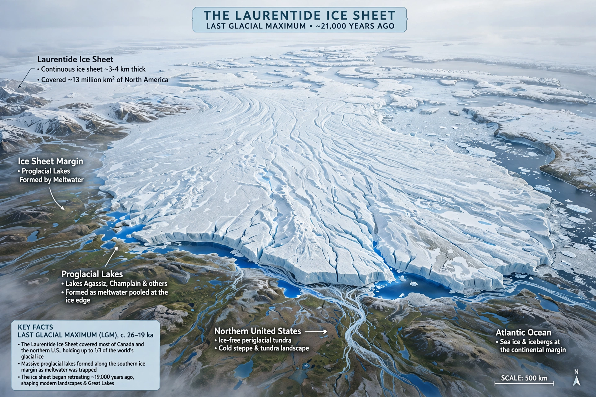

The Laurentide Ice Sheet was a massive sheet of ice covering millions of square kilometres, including most of Canada and a large portion of the Northern United States, multiple times during the Quaternary glacial epochs, from 2.588 million years ago to the present.

| Laurentide Ice Sheet | |
|---|---|
| Type | Continental ice sheet |
| Location | North America |
| Maximum extent | ~20,000 years ago |
At its Last Glacial Maximum about 20,000 years ago, the ice sheet was up to 3–4 km thick over Hudson Bay and extended south to the Ohio and Missouri river valleys. It shaped the Great Lakes, scoured the Canadian Shield, and depressed the crust, which is still rebounding.
Deglaciation began about 20,000 years ago and was largely complete by 6,000 years ago, with remnants persisting on Baffin Island. Meltwater formed glacial lakes such as Lake Agassiz and may have triggered abrupt climate events like the Younger Dryas via freshwater pulses into the North Atlantic.